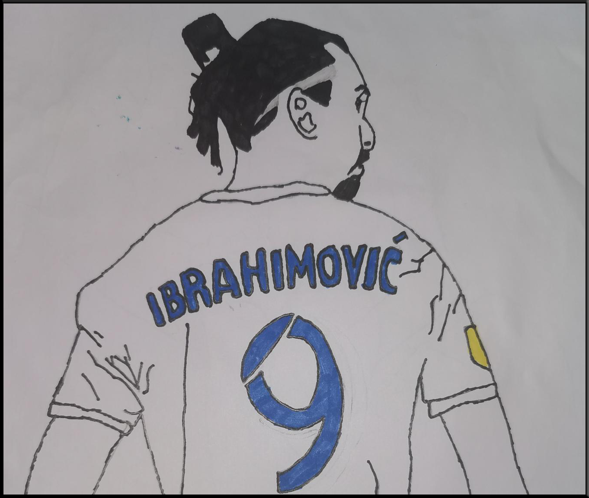

Welcome to my blog. I'm a 13 year old boy who likes to play video games especially call of duty. That's why I'm going to share my tips and ideas to you about gaming. My favourite food is tacos. I love the colour blue.
I'm really interested in gaming as you can tell from the picture and video I have chosen. Even the main purpose of making this blog was to introduce you guys into gaming. Since gaming is my biggest addiction and I can play it for hours and hours, I have a lot to share. The best game I know right now is Call of duty, I saw my father playing and from there I felt like it was something for me. Now I play with friends, my father and cousin. The good thing is that ypu can play it on your desktop but also play station. More interesting games that I play are: Fortnite, Fifa and Tekken. Obviously that's a mixture of many skills and there are different skills for every game. I have followed Fifa since Fifa 10 came which was also my first game. By the time I have learned more and more. I would suggest that you guys also should give them a try and don't give up if you're not managing to win. It takes a lot of effort and time to be good at something and I still don't qualify myself as a professional. That's the biggest reason why I started this blog, to incourage other people to find their skills and interest for gaming. Another reason is to help you guys with some basic tips, advice and tricks.
By the time I have found another hobby: drawing. It took me a long time to realise that I had the talent to draw. I started enjoying art in grade three. But the time I realised was last year. The actual time I drew was for my sister on her birthday. It became a tradition to draw something for my family's birthday, special occasions and for school work. We have hanged up some drawings on the walls that I'm really proud of. Many people use specific material for drawing, like pens and pencils but I'm still experimenting with different shades and colours. I don't like colouring as much as drawing, so I leave that job to my sisters. As I said before, you need to give all the things you want to achieve some time. Some people learn directly and some need to give it some effort. I was not good at the beginning either but with my experience and learning from my mistakes has helped me. I mostly draw football players but it can also be birthday drawings, black and white drawings or drawings with a random theme.
